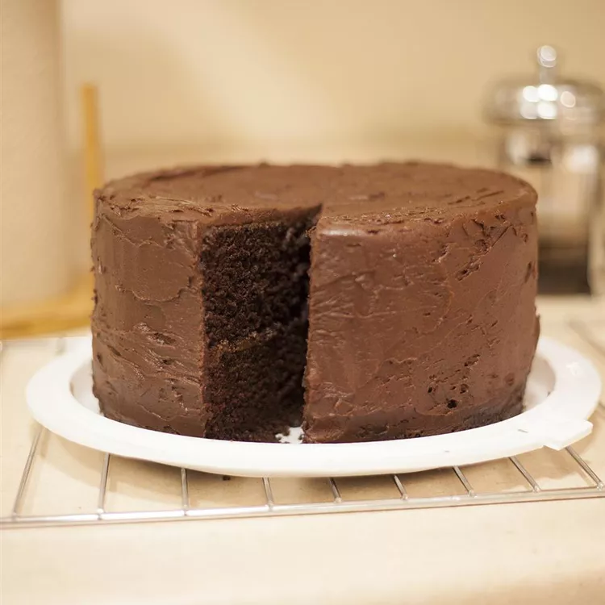

Chocolate Cake

Description
A mouth-watering chocolate cake all in one bowl? Look no further for an amazing easy recipe for chocolate cake that will leave you full and sated.
Ingredients
- 2 cups all-purpose flour
- 2 cups white sugar
- 3/4 cup unsweetened coca
- 2 teaspoons baking soda
- 1 teaspoon baking powder
- 1/2 teaspoon salt
- 2 eggs
- 1 cup cold brewed coffee
- 1 cup milk
- 1/2 cup vegetable oil
- 2 teaspoons vinegar
Instructions
- Preheat oven to 350 degrees F (175 degrees C). Grease and flour a 9x13 inch pan.
- In a large bowl, combine the flour, sugar, cocoa, baking soda, baking powder and salt. Make a well in the center and pour in the eggs, coffee, milk, oil and vinegar. Mix until smooth; the batter will be thin. Pour the batter into the prepared pan.
- Bake in the preheated oven for 45 to 50 minutes, or until a toothpick inserted into the center of the cake comes out clean. Allow to cool.